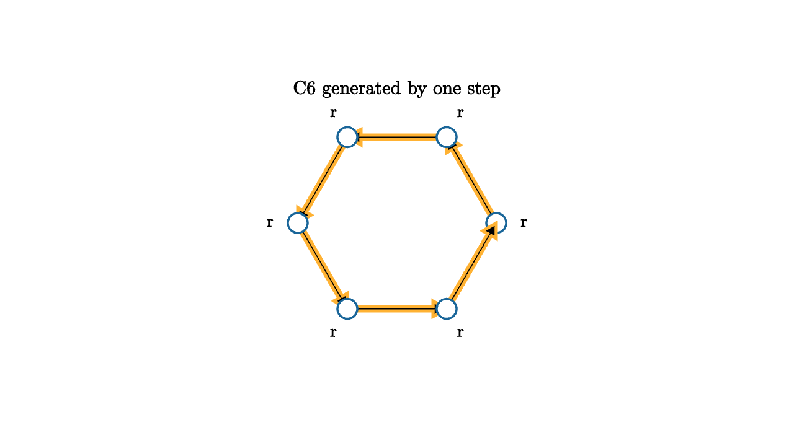

Cayley Graphs Make Presentations Visible
A group presentation gives generators and relations. For example, a cyclic group might be written with one generator r and the relation r^6 = e. That notation says every element can be reached by stepping with r, and six steps bring you home. A Cayley graph draws those steps.
Vertices are group elements. A colored edge labeled by a generator goes from g to ga. The graph becomes a map of algebraic travel. Multiplication by a generator is not a calculation hidden in a table. It is a move along an edge.

source
let Node = |angle| [
center{[cos(angle), sin(angle), 0]} fill{WHITE} stroke{BLUE, 2} Circle(0.1),
center{[1.28 * cos(angle), 1.28 * sin(angle), 0]} Text("r", 0.62)
]
mesh scene = block {
. center{1.35u} Text("C6 generated by one step", 0.68)
for (i in range(0, 6)) {
let a = TAU * i / 6
let b = TAU * (i + 1) / 6
. stroke{ORANGE, 3} Arrow([cos(a), sin(a), 0], [cos(b), sin(b), 0])
. Node(a)
}
}The graph reveals relations as closed loops. In the six-cycle, the path r r r r r r returns to the identity. If a presentation has generators a and b with relation aba^{-1}b^{-1} = e, then the Cayley graph contains square-like loops showing that a and b commute. If a relation fails, the corresponding path ends somewhere else.
source
let pos = |i| [cos(TAU * i / 6), sin(TAU * i / 6), 0]
"Graph"
mesh title = center{1.35u} Text("a word is a path in the graph", 0.66)
mesh graph = block {
for (i in range(0, 6)) {
. stroke{LIGHT_GRAY, 2} Line(pos(i), pos(i + 1))
. center{pos(i)} fill{WHITE} stroke{BLUE, 2} Circle(0.09)
}
}
mesh traveler = center{pos(1)} fill{ORANGE} Circle(0.12)
mesh caption = center{1.25d} Text("r r r walks through powers of r", 0.62)
play Fade(0.7)
play Grow(0.5)
"Word"
traveler = center{pos(5)} fill{ORANGE} Circle(0.12)
play Lerp(1.4)
caption = center{1.25d} Text("relations are paths that return home", 0.62)
play Trans(0.6)Cayley graphs are also a visual introduction to word metrics. Pick generators. The distance from the identity to g is the shortest word length needed to express g. Algebra becomes geometry: groups have large-scale shape. The integers with generator 1 look like a line. The free group on two generators looks like a branching tree. The group Z^2 with two commuting generators looks like a grid.
This viewpoint is powerful because it tolerates abstraction. A group may not originally be a set of visible symmetries. It may come from matrices, permutations, loops on a surface, or formal generators and relations. The Cayley graph still gives a way to move through it.
Reduction of words becomes path simplification. In a free group, aa^{-1} cancels because you walk along an edge and immediately walk back. In a group with relations, more interesting loops can be contracted. The algebraic problem of deciding whether a word equals the identity becomes a geometric problem of whether a path returns home and can be reduced using known loops.
There is a warning: a Cayley graph depends on the chosen generators. The same group can have different local drawings. Still, many large-scale features remain meaningful. Geometric group theory studies groups through these coarse shapes. It asks whether a group behaves more like a tree, a lattice, a negatively curved space, or something stranger.
Computer science uses this picture whenever states are connected by moves. A puzzle group has positions as vertices and legal moves as generators. Solving the puzzle means finding a path to the identity state. Cryptography, automata theory, and algorithmic algebra all meet this problem in different clothing.
The visual moral is simple. A generator is a button. A word is a route. A relation is a loop. A presentation is not only a compressed definition of a group. It is a recipe for a navigable space, one move at a time.